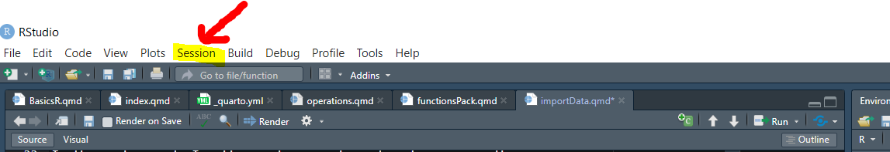
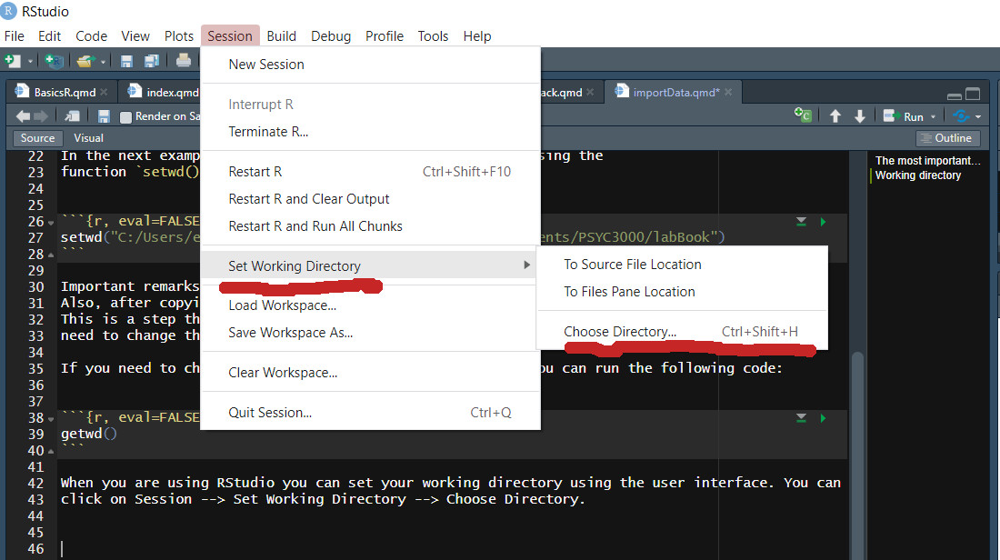
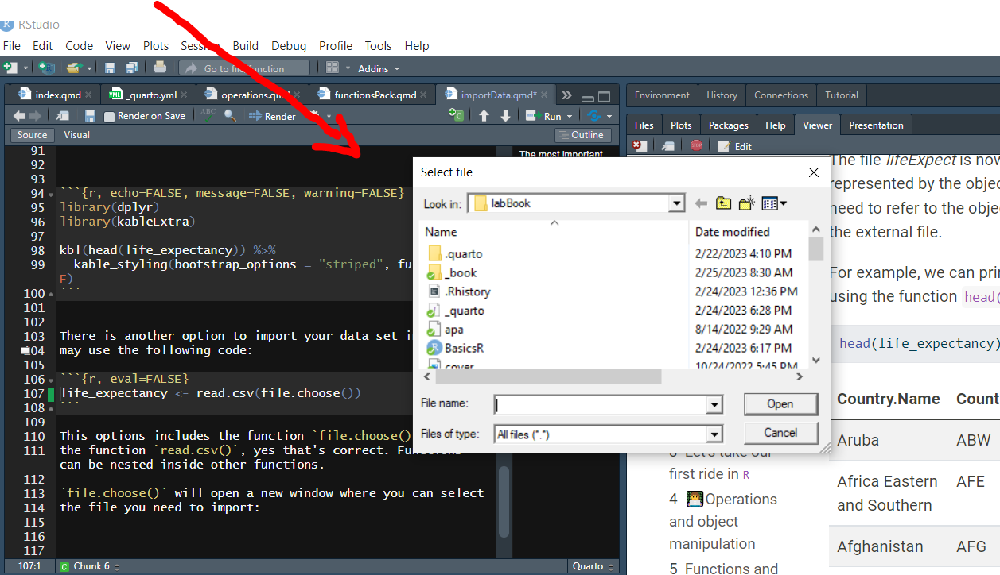

setwd("C:/Users/emontenegro1/Documents/MEGA/stanStateDocuments/PSYC3000/labBook")6 The most important question: how do I import data?
When you are an applied researcher or a student learning statistics, you have a question in the back of your head: how do I import data in R? After all, you will not program in R, you will be an R user.
Importing data in R is simple but, you have multiple options to read in data. R also opens all sorts of files, it is almost universal in the sense that you can open almost any file.
Before explaining how to import a data set, I need to introduce the concept of working directory.
6.1 Working directory
Programming languages and software always need a working space. The working space is a folder in your computer where R will try to find files needed to be opened. The working folder or directory will also be the place where R saves any information or file that you request to save from R.
In the next example I will specify my working directory, using the function setwd(), in this example the working folder is “labBook”:
Important remarks: I specify the whole path to the folder where my files will be located. Also, after copying the path in Windows, I had to change the back slash \ for slash /. This is a step that you have to do if you are using a Windows computer. Mac users don’t need to change the path.
If you need to check the path to your working directory, you can run the following code:
getwd()When you are using RStudio you can set your working directory using the user interface. You can click on Session –> Set Working Directory –> Choose Directory.


If you don’t set your working directory manually, R will set your working director at your Documents folder in Windows and Mac. If you are using RStudio, the working directory by default is where you opened your code. For instance, if you open your code from the folder PSYC3000_homework. The default working directory will be PSYC3000_homework.
6.2 Import a data file
After setting the working directory, you are now ready to import the data you need to analyze. There are multiple functions to open specific file formats. In this course we will use mostly read.csv() function.
life_expectancy <- read.csv("lifeExpect.csv")I’m importing the file named lifeExpect.csv, this file is located in my local folder. The same folder that I specify as my working directory in the previous step.
You might wonder, what is a .csv file? CSV stands for “comma separated values”, it is a light format to save information. It is also easy to open in any operated system. I use this format frequently because I can send the file to any student and I’m sure the file opens in any computer, tablet or cellphone.
The file lifeExpect is now inside our virtual space in R. It is now represented by the object life_expectancy. From now on, we need to refer to the object to get access to the information inside the external file.
For example, we can print the first five values of each column using the function head():
head(life_expectancy)| Country.Name | Country.Code | X1960 | X1961 | X1962 | X1963 | X1964 | X1965 | X1966 | X1967 | X1968 | X1969 | X1970 | X1971 | X1972 | X1973 | X1974 | X1975 | X1976 | X1977 | X1978 | X1979 | X1980 | X1981 | X1982 | X1983 | X1984 | X1985 | X1986 | X1987 | X1988 | X1989 | X1990 | X1991 | X1992 | X1993 | X1994 | X1995 | X1996 | X1997 | X1998 | X1999 | X2000 | X2001 | X2002 | X2003 | X2004 | X2005 | X2006 | X2007 | X2008 | X2009 | X2010 | X2011 | X2012 | X2013 | X2014 | X2015 | X2016 | X2017 | X2018 | X2019 | X2020 |
|---|---|---|---|---|---|---|---|---|---|---|---|---|---|---|---|---|---|---|---|---|---|---|---|---|---|---|---|---|---|---|---|---|---|---|---|---|---|---|---|---|---|---|---|---|---|---|---|---|---|---|---|---|---|---|---|---|---|---|---|---|---|---|
| Aruba | ABW | 65.66200 | 66.07400 | 66.44400 | 66.78700 | 67.11300 | 67.43500 | 67.76200 | 68.09500 | 68.43600 | 68.78400 | 69.14000 | 69.49800 | 69.85100 | 70.19100 | 70.51900 | 70.83300 | 71.14000 | 71.44100 | 71.73600 | 72.02300 | 72.29300 | 72.53800 | 72.75100 | 72.92900 | 73.07100 | 73.18100 | 73.26200 | 73.32500 | 73.37800 | 73.42500 | 73.46800 | 73.50900 | 73.54400 | 73.57300 | 73.59800 | 73.62200 | 73.64600 | 73.67100 | 73.70000 | 73.73800 | 73.78700 | 73.85300 | 73.93700 | 74.03800 | 74.15600 | 74.28700 | 74.42900 | 74.57600 | 74.7250 | 74.87200 | 75.01700 | 75.15800 | 75.29900 | 75.44100 | 75.58300 | 75.72500 | 75.86800 | 76.01000 | 76.15200 | 76.29300 | 76.43400 |
| Africa Eastern and Southern | AFE | 42.71605 | 43.16694 | 43.60399 | 44.02562 | 44.43272 | 44.82692 | 45.21305 | 45.59429 | 45.97406 | 46.35240 | 46.72880 | 47.10287 | 47.47117 | 47.82940 | 48.17500 | 48.50331 | 48.81084 | 49.09785 | 49.36633 | 49.62000 | 49.87069 | 50.11589 | 50.36346 | 50.61038 | 50.84833 | 51.05806 | 51.21428 | 51.29978 | 51.30860 | 51.25176 | 51.15411 | 51.04841 | 50.95726 | 50.89025 | 50.84186 | 50.80848 | 50.79616 | 50.82061 | 50.89761 | 51.04419 | 51.27613 | 51.60646 | 52.04315 | 52.58585 | 53.22891 | 53.96655 | 54.79171 | 55.68234 | 56.6098 | 57.54877 | 58.47070 | 59.35359 | 60.18556 | 60.95336 | 61.64737 | 62.25929 | 62.78768 | 63.24626 | 63.64899 | 64.00521 | 64.32570 |
| Afghanistan | AFG | 32.44600 | 32.96200 | 33.47100 | 33.97100 | 34.46300 | 34.94800 | 35.43000 | 35.91400 | 36.40300 | 36.90000 | 37.40900 | 37.93000 | 38.46100 | 39.00300 | 39.55800 | 40.12800 | 40.71500 | 41.32000 | 41.94400 | 42.58500 | 43.24400 | 43.92300 | 44.61700 | 45.32400 | 46.04000 | 46.76100 | 47.48600 | 48.21100 | 48.93000 | 49.64000 | 50.33100 | 50.99900 | 51.64100 | 52.25600 | 52.84200 | 53.39800 | 53.92400 | 54.42400 | 54.90600 | 55.37600 | 55.84100 | 56.30800 | 56.78400 | 57.27100 | 57.77200 | 58.29000 | 58.82600 | 59.37500 | 59.9300 | 60.48400 | 61.02800 | 61.55300 | 62.05400 | 62.52500 | 62.96600 | 63.37700 | 63.76300 | 64.13000 | 64.48600 | 64.83300 | 65.17300 |
| Africa Western and Central | AFW | 37.20538 | 37.63255 | 38.05261 | 38.46375 | 38.86707 | 39.26484 | 39.66276 | 40.06641 | 40.48283 | 40.91421 | 41.36512 | 41.83721 | 42.32704 | 42.82908 | 43.33922 | 43.85504 | 44.37397 | 44.89223 | 45.40268 | 45.89748 | 46.36610 | 46.79829 | 47.18862 | 47.53399 | 47.83054 | 48.07938 | 48.28458 | 48.45413 | 48.59742 | 48.71923 | 48.81700 | 48.88593 | 48.92342 | 48.93371 | 48.92551 | 48.90994 | 48.89988 | 48.90913 | 48.95534 | 49.05264 | 49.21971 | 49.47514 | 49.81693 | 50.23943 | 50.73342 | 51.28349 | 51.86820 | 52.46396 | 53.0495 | 53.61209 | 54.14431 | 54.65000 | 55.13894 | 55.61899 | 56.08827 | 56.54201 | 56.97476 | 57.38236 | 57.76235 | 58.11572 | 58.44595 |
| Angola | AGO | 37.52400 | 37.81100 | 38.11300 | 38.43000 | 38.76000 | 39.10200 | 39.45400 | 39.81300 | 40.17800 | 40.54600 | 40.91400 | 41.28200 | 41.65000 | 42.01600 | 42.37400 | 42.72100 | 43.05300 | 43.36700 | 43.66000 | 43.93100 | 44.17800 | 44.40400 | 44.61100 | 44.79900 | 44.96600 | 45.10700 | 45.21300 | 45.28300 | 45.31700 | 45.32400 | 45.30600 | 45.27100 | 45.23000 | 45.20100 | 45.20100 | 45.24600 | 45.35000 | 45.51900 | 45.76300 | 46.09300 | 46.52200 | 47.05900 | 47.70200 | 48.44000 | 49.26300 | 50.16500 | 51.14300 | 52.17700 | 53.2430 | 54.31100 | 55.35000 | 56.33000 | 57.23600 | 58.05400 | 58.77600 | 59.39800 | 59.92500 | 60.37900 | 60.78200 | 61.14700 | 61.48700 |
| Albania | ALB | 62.28300 | 63.30100 | 64.19000 | 64.91400 | 65.46300 | 65.85000 | 66.11000 | 66.30400 | 66.48700 | 66.68900 | 66.93500 | 67.23700 | 67.58200 | 67.95300 | 68.34300 | 68.73600 | 69.11000 | 69.44800 | 69.74200 | 69.99100 | 70.20800 | 70.41600 | 70.63500 | 70.87600 | 71.13400 | 71.38800 | 71.60500 | 71.76000 | 71.84300 | 71.86000 | 71.83600 | 71.80300 | 71.80200 | 71.86000 | 71.99200 | 72.20500 | 72.49500 | 72.83800 | 73.20800 | 73.58700 | 73.95500 | 74.28800 | 74.57900 | 74.82800 | 75.03900 | 75.22800 | 75.42300 | 75.64600 | 75.9120 | 76.22100 | 76.56200 | 76.91400 | 77.25200 | 77.55400 | 77.81300 | 78.02500 | 78.19400 | 78.33300 | 78.45800 | 78.57300 | 78.68600 |
There is another option to import your data set in R, you may use the following code:
life_expectancy <- read.csv(file.choose())This options includes the function file.choose() inside the function read.csv(), yes that’s correct. Functions can be nested inside other functions.
file.choose() will open a new window where you can select the file you need to import:
